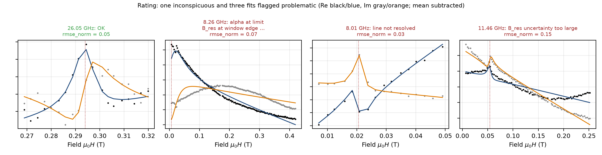

Fit rating¶
bewerte_fit (fit/kriterien.py) – problematic as soon as one condition holds:
| Criterion | Condition | Constant | |
|---|---|---|---|
| a | residual | rmse_norm > 0.35 (RMSE/signal swing after background removal); emergency brake chi2_red > 1e6 |
RMSE_NORM_SCHWELLE, CHI2_RED_NOTBREMSE |
| b | at bound | alpha, phi, B_res within 1 % of the bound range (alpha logarithmic) |
GRENZ_NAEHE_REL |
| c | outside | B_res ∉ window |
|
| d | unphysical | alpha > alpha_plausibel (default alpha_max/2 = 0.05; Ctrl+P) |
ALPHA_PLAUSIBEL_MAX |
| e | convergence/covariance | no success; no uncertainties and rmse_norm > 0.10 |
RMSE_NORM_EXZELLENT |
| f | uncertainty | B_res_err/|B_res| > 2 % |
B_RES_REL_UNSICHERHEIT_MAX |
| g | too few points | < 12 points in window/corridor | MIN_PUNKTE_FIT |
| h | line not resolved | µ0ΔH < 1.5 field steps (Ctrl+P, 0 = off; YIG) |
DH_MIN_FELDSCHRITTE |
R² is no quality measure (background dominates the variance → R² ≈ 1 even without resonance). chi2_red (noise from second differences, MAD/√6) is exported, not used for rating.

Only unproblematic fits enter Kittel/LLG (_gute_ergebnisse). With several modes, b–d are checked per mode.
User rating and status colors¶
FitErgebnis.bewertung ∈ auto (criteria decide) · bestaetigt (counts as good) · verworfen (counts as problematic); problematisch = effective state, problematisch_auto = criteria only (both exported). Targeted single refits are bestaetigt by default (nachfit_bestaetigen, Ctrl+P); region/corridor fits, zone recomputation and project restore stay auto. Functions → Rating of the current fit → Refit all fits and confirm as good sets bestaetigt for all fits of the mode (except verworfen/outliers). Changing α plausibility/resolution (Ctrl+P) re-rates existing fits (bewerte_alle_neu). setze_bewertung returns a copy (undo-safe).
Colors and shapes per DIN EN 60073 / ISO 3864 (gui/farben.py); shape as second cue (DIN EN ISO 9241-125):
| Status | Color | Marker | Meaning |
|---|---|---|---|
gut |
green | ● | criteria met |
bestaetigt |
green, blue edge | ● | confirmed good by user |
problem |
yellow | ▲ | criteria violated or rejected by user – check |
fehler |
red | ✕ | no convergence / no result |
ignoriert |
gray, dark edge | ● | outlier (only with View → Show ignored points (outliers) in gray) or not fitted |
| mode k ≥ 2 | mode color | ● | corridor fit of a further mode |
Blue marks active modes, selection and control states; yellow warnings in the log, red errors.